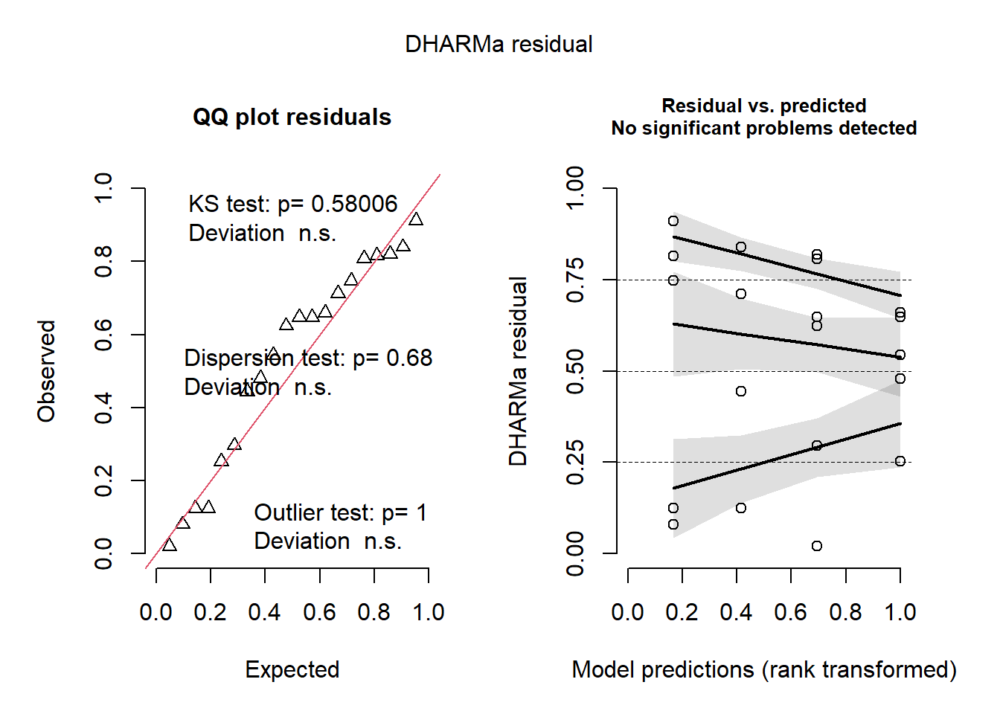

El ANOVA factorial se utiliza cuando tenemos dos o más variables independientes y cada uno de estos factores puede tener varios niveles. El ANOVA factorial sólo puede utilizarse en el caso de un experimento factorial completo, en el que se utilizan todas las permutaciones posibles de factores y sus niveles. Este ANOVA no sólo mide la variable independiente frente a la variable independiente, sino también si los dos factores se afectan mutuamente.
Codigo
# Analisis exploratoriolibrary(readxl)library(tidyverse)dat <-read_excel("dados-diversos.xlsx", "fungicida_vaso")dat2 <- dat |>mutate(inc = dis_sp/n_sp*100)# mutate()crea nuevas columnas que son funciones de variables existentes. Esta función también puede modificar (si el nombre es el mismo que el de una columna existente) y eliminar columnas (estableciendo su valor en NULL).dat2 |>ggplot(aes(x=treat,y=inc)) +geom_jitter(width =0.1) +facet_wrap(~ dose)
Warning: Non-normality of residuals detected (p = 0.050).
Codigo
check_heteroscedasticity(m2)
OK: Error variance appears to be homoscedastic (p = 0.180).
Codigo
library(DHARMa)plot(simulateResiduals(m2))

“Response” me permite trabajar en mis datos sin transformación.Utilizo esta función para btener predicciones en la escala de la variable de respuesta. Esto es especialmente relevante para modelos donde la relación entre las variables independientes y la respuesta no es lineal.
Codigo
# Comparación de medias "Tratamiento en función a dosis"library(emmeans)means_m2 <-emmeans (m2, ~treat|dose,type="response")means_m2
dose = 0.5:
treat response SE df lower.CL upper.CL .group
Tebuconazole 1.21 0.737 16 0.188 3.76 1
Ionic liquid 27.05 11.847 16 10.570 68.05 2
dose = 2.0:
treat response SE df lower.CL upper.CL .group
Tebuconazole 1.42 0.925 16 0.194 4.83 1
Ionic liquid 3.10 1.412 16 1.065 7.77 1
Confidence level used: 0.95
Intervals are back-transformed from the log(mu + 0.5) scale
Note: contrasts are still on the log(mu + 0.5) scale. Consider using
regrid() if you want contrasts of back-transformed estimates.
significance level used: alpha = 0.05
NOTE: If two or more means share the same grouping symbol,
then we cannot show them to be different.
But we also did not show them to be the same.
Codigo
# Comparación de medias "Dosis en función del tratamiento"library(emmeans)means_m2 <-emmeans (m2, ~dose|treat,type="response")means_m2
treat = Ionic liquid:
dose response SE df lower.CL upper.CL .group
2.0 3.10 1.412 16 1.065 7.77 1
0.5 27.05 11.847 16 10.570 68.05 2
treat = Tebuconazole:
dose response SE df lower.CL upper.CL .group
0.5 1.21 0.737 16 0.188 3.76 1
2.0 1.42 0.925 16 0.194 4.83 1
Confidence level used: 0.95
Intervals are back-transformed from the log(mu + 0.5) scale
Note: contrasts are still on the log(mu + 0.5) scale. Consider using
regrid() if you want contrasts of back-transformed estimates.
significance level used: alpha = 0.05
NOTE: If two or more means share the same grouping symbol,
then we cannot show them to be different.
But we also did not show them to be the same.
cv.model
Se refiere generalmente al modelo de validación cruzada (cross-validation model), es una técnica que implica dividir el conjunto de datos en múltiples subconjuntos, entrenando el modelo en algunos de estos subconjuntos y validando su desempeño en los subconjuntos restantes. Obtenemos un coeficiente de variacion del experimento obtenido pelos modelos lm () ou aov()
Esta función presenta los resultados de “emmeans” y las comparaciones por pares de forma compacta. Muestra una matriz (o matrices) de estimaciones, diferencias emparejadas y valores P.
hybrid emmean SE df lower.CL upper.CL .group
30S31YH 8056 552 42 6942 9170 1
30S31H 8652 552 42 7538 9765 12
30F53 YH 9309 552 42 8195 10423 123
30F53 HX 10598 552 42 9484 11712 234
30K64 11018 552 42 9904 12132 34
BG7049H 12402 552 42 11288 13516 4
Confidence level used: 0.95
P value adjustment: tukey method for comparing a family of 6 estimates
significance level used: alpha = 0.05
NOTE: If two or more means share the same grouping symbol,
then we cannot show them to be different.
But we also did not show them to be the same.